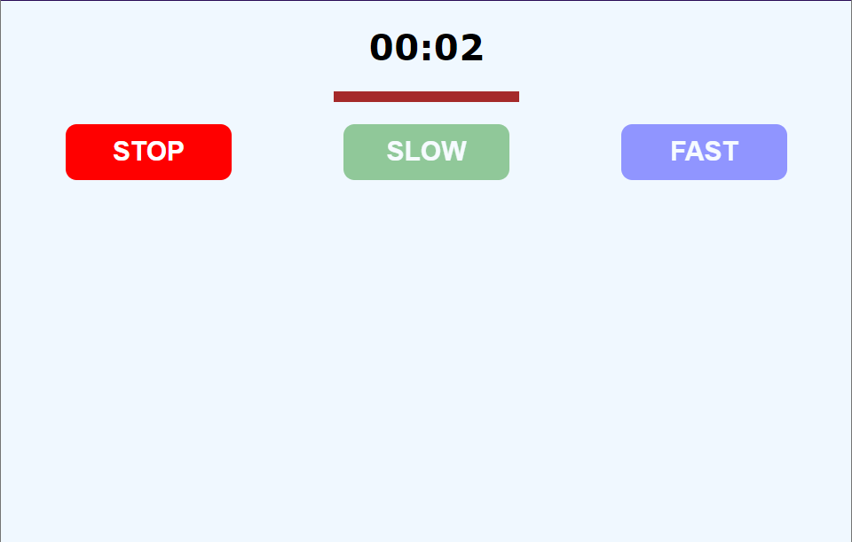
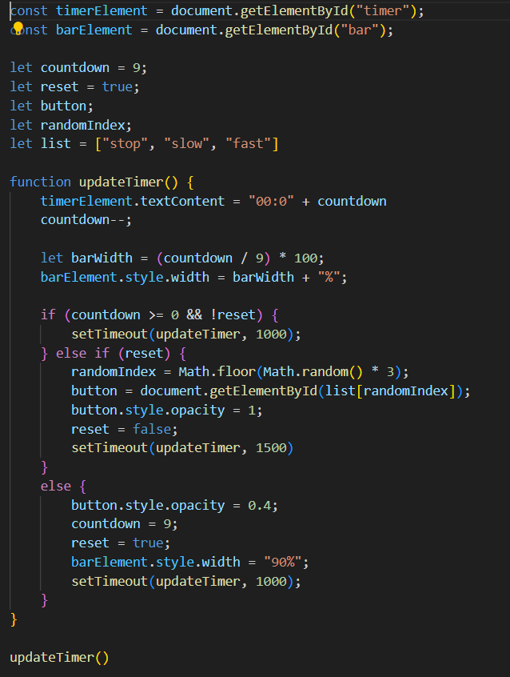

Countdown in Web Browser
25 Jun 2024
I wanted to make countdown timer and later settled for the following idea. The timer starts from 9 seconds all the way till 0 seconds. And when the timer starts one of the button glows up till the timer ends. When the timer ends another button glows up at random. Also One more thing I thought to add was some kind of rectangle that shrinks in size wrt to the timer. I saw this one on the internet and wanted to do it. So the main things to do here are as follows:
- Make the timer and buttons
- Light up the buttons accordingly
- Make the rectangle shrink
I used HTML and CSS to make the timer like "00:0" and the corresponding number between 0 and 9. Made 3 buttons namely STOP, SLOW and FAST and gave them red, green and blue colors respectively. The countdown was made using setTimeout() in JS (saw that in internet) Made it in a way using if and else, to set it in a loop forever.
Issues and Working
Then next things was to use JavaScript to make them glow accordingly. At this point I came across the thing that when I used loops, here came a thing specific to JavaScript, "async" and "await" and I still didn't know about it. Things started going haywire when using the same logic I used, which would work perfectly fine in Python, but it did not. I browsed the internet but then I realized I have to learn it. In the meanwhile while looking at the code, I thought to keep the whole logic inside if else conditions, which seems to turn out pretty fine in the end. If you look at the code below, the if statement is for the basic timer condition while the else if is to set the glow up for the button and the last else block is to reset the button back when the timer hits 0. This was one thing I figured out. But the last rectangle shrink goes to the internet.
The logic goes something like this. The countdown is set to 9 in the beginning, by the else if block and choosing a random block which are inside a list as given in code. 9 renders on the screen and decreases the countdown by 1. Till the countdown goes to 0 the first if block is done. When the countdown goes to -1 the else block is used to reset timer and restore back color to the button.
Shrinking Bar
The final part of this is making the rectangle and I used the internet to find it out. As shown above the barWidth is given by time remaining by total time multiplied with 100, which is just great. I wish I could've figured it out but no. I will try better next time. But that was smart time and width relation. To smooth out, I used CSS transition property for both width and color of button (also to the internet)
With that all the stuff is completed. I have made small tweaks with the time but other that that everything is working fine. I am very sure that the code can be improved vastly, even though it works right now. I tried my best to affect the DOM only when required. If you feel that anything is missing then feel free to tell me about it through mail. All other improvements and suggestions are welcomed.